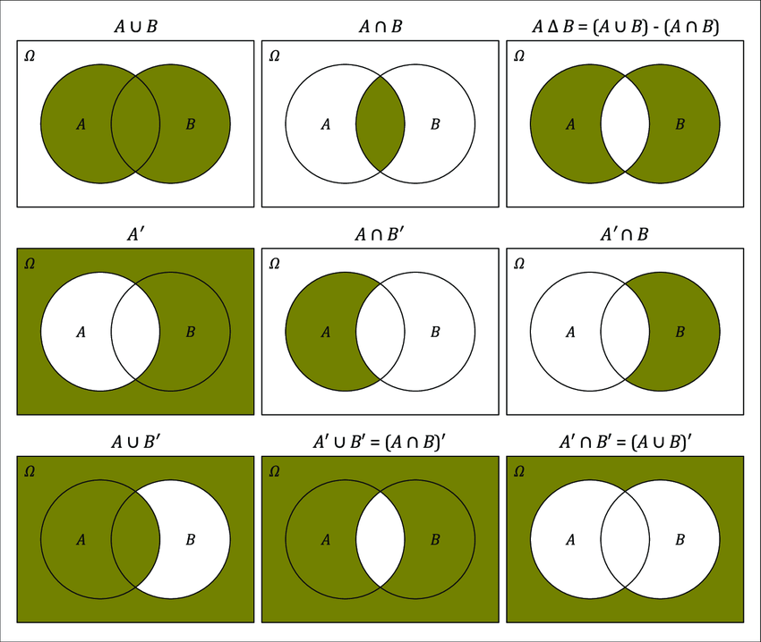
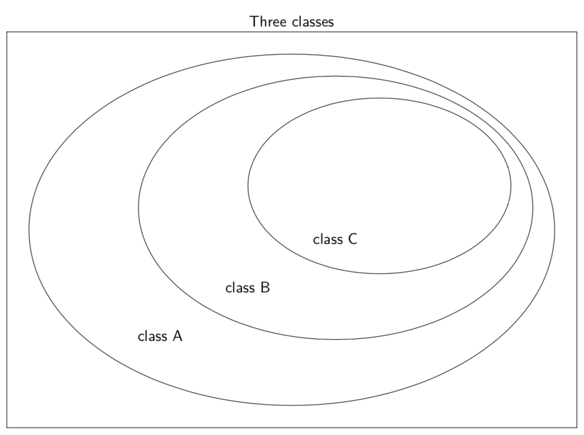

Set theory
Review
| Symbol | Definition | Example |
|---|---|---|
| : | such that | A = {x: 0 < x < 10} |
| | | such that | A = {x | 0 < x < 10} |
| ∈ | element of | A = {1, 2, 3} B = {2, 3} B ∈ A |
Subsets and Proper Subsets
Definitions
| Term | Definition | Example |
|---|---|---|
| subset ⊆ | All of the elements of one set is contained in or is equal to another set | A = {1, 2, 3}, B = {2, 3}, C = {1, 2, 3} B ⊆ A, C ⊆ A |
| proper subset ⊂ | All of the elements of one set is container in another set that are not equal | A = {1, 2, 3}, B = {2, 3}, C = {1, 2, 3} only B ⊂ A |
| not a subset of ⊄ | Not all elements are contained in another set | A = {1, 2, 3}, B = {2, 3}, C = {1, 2, 3} A ⊄ B |
Power set
Definitions
| Power Set | Definition | Example |
|---|---|---|
| P() | contains all subsets of | A = {1, 2} P(A) = {∅, {1}, {2}, {1, 2}} |
Cardinality
A = {1, 2, 3}
P(A) = {∅, {1}, {2}, {3}, {1, 2}, {1, 3}, {2, 3}, {1, 2, 3}}
|P(A)| = 2|A| = 23 = 8
Diagram
A = {X, Y, Z}
P(A) = {∅, {X}, {2}, {3}, {1, 2}, {1, 3}, {2, 3}, {1, 2, 3}}
| 1 | 2 | 3 | 4 | 5 | 6 | 7 | 8 | |
|---|---|---|---|---|---|---|---|---|
| X | 🟥 | 🟩 | 🟥 | 🟥 | 🟩 | 🟩 | 🟥 | 🟩 |
| Y | 🟥 | 🟥 | 🟩 | 🟥 | 🟩 | 🟥 | 🟩 | 🟩 |
| Z | 🟥 | 🟥 | 🟥 | 🟩 | 🟥 | 🟩 | 🟩 | 🟩 |
| Set | ∅ | {X} | {Y} | {Z} | {X, Y} | {X, Z} | {Y, Z} | {X, Y, Z} |
Logic
Definitions
| Term | Definition | Example |
|---|---|---|
| Union ∪ | A ∪ B = {x | x ∈ A or x ∈ B} Elements that are in either set A or set B |
A = {1, 2, 3}, B = {3, 4, 5} A ∪ B = {1, 2, 3, 4, 5} |
| Intersection ∩ | A ∩ B = {x | x ∈ A or x ∈ B} Elements that are in both set A and set B |
A = {1, 2, 3}, B = {3, 4, 5} A ∩ B = {3} |
| Difference - | A - B = {x | x ∈ A or x ∉ B} Elements of A that are not in B |
A = {1, 2, 3}, B = {3, 4, 5} A - B = {1, 2} |
| Compliment ’ | A’ = Ā = {x | x ∈ U and x ∉ A} All elements that are not in A |
A = {1, 2, 3} A’ = {4, 5, 6, 7…} |
| Symmetric Difference ⊕ | A ⊕ B = (A - B) ∪ (B - A) All elements of A or B, excluding the elements that are in both A and B |
A = {1, 2, 3}, B = {3, 4, 5} A ⊕ B = {1, 2, 4, 5} |
* if there are no intersection for Symmetric Difference, then it is known as disjointed
Diagrams

Nested Element of Diagram
C ∈ B and B ∈ A ⟹ C ∈ A

Proofs
Definitions
| Terms | Definitions | Examples | |||||||||||||||
|---|---|---|---|---|---|---|---|---|---|---|---|---|---|---|---|---|---|
| If and only if, iff ⟺ | One thing is true only if the second condition is satisfied, and this goes both ways | A = B ⟺ A ⊆ B and B ⊆ A | |||||||||||||||
| if…, then… ⟹ | If one thing is true, then the other is true | A ⟹ B | |||||||||||||||
| or ∨ | if one thing is true, or the other thing is true, it will evaluate to true | A ∨ B
|
|||||||||||||||
| and ∧ | Only if both are true then it will evaluate to true |
|
Axioms (Preknown Truths)
- A = B ⟺ A ⊆ B and B ⊆ A
- A ⊆ B ∧ B ⊆ C ⟹ A ⊆ C
- ∅ ⊆ A for any A, but not ∅ ∈ A